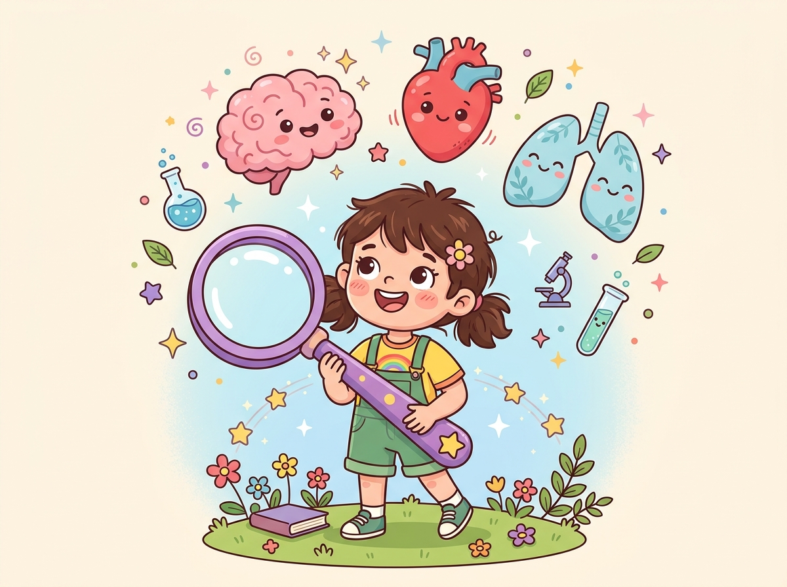
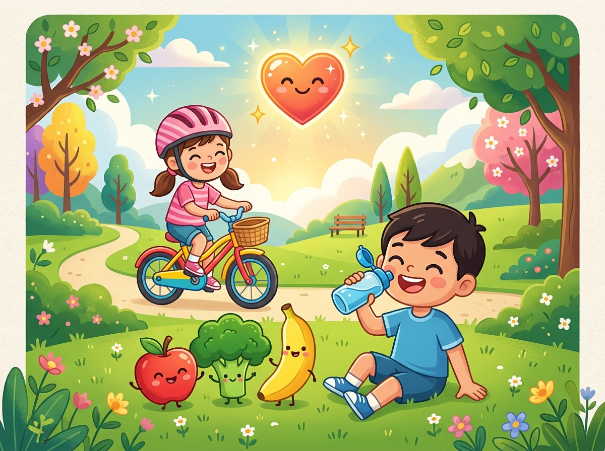
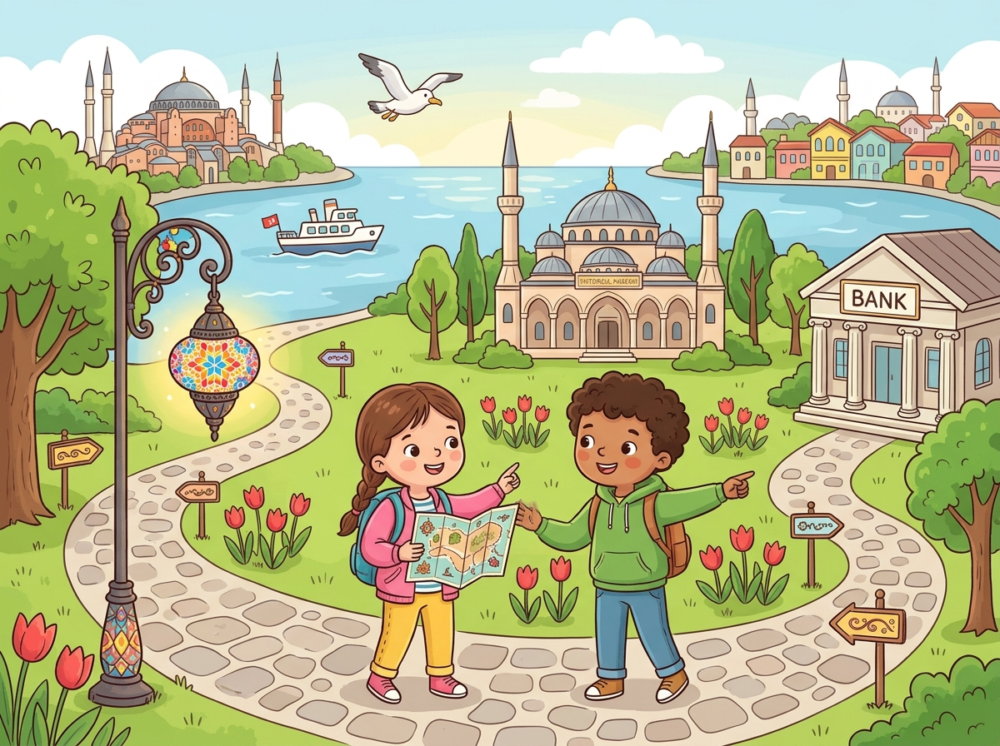
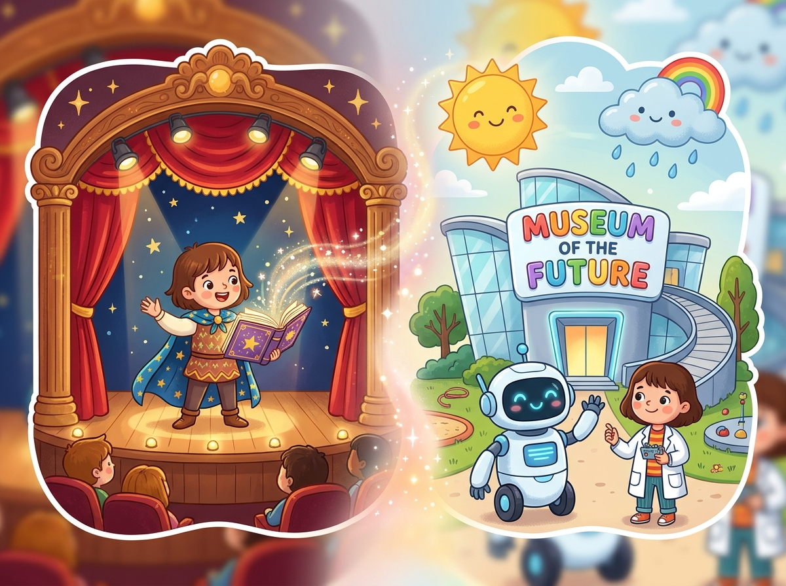

Aprenda Ciências e Inglês Brincando!
Explore o corpo humano, descubra como os pulmões e o coração funcionam, viaje por Istambul, suba no palco das histórias e visite o Museu do Futuro! Clique nos cartões para ouvir a pronúncia em inglês 🔊 e ganhe estrelas ⭐ em cada atividade!

1. The Human Body & 2. The Respiratory System
O corpo humano possui diferentes órgãos, e cada um realiza uma função importante! Clique nas partes do boneco ou nos cartões para explorar, ouvir em inglês e ganhar estrelas.
🧍♂️ 1. The Human Body — O Corpo Humano (12 Órgãos e Partes)
👆 Clique no boneco ou nos cartões para ouvir em inglês!Controla pensamentos e movimentos.
🫁 2. The Respiratory System — Sistema Respiratório
Oxygen (O₂) & Carbon Dioxide (CO₂)O sistema respiratório permite que o corpo receba oxigênio (oxygen) e elimine gás carbônico (carbon dioxide).
🌬️ Simulador: Como funciona a respiração?
- 1 O ar entra pelo nariz (nose) ou pela boca (mouth).
- 2 O ar passa pela traqueia (trachea) e chega aos pulmões (lungs).
- 3 Nos pulmões, o oxigênio (oxygen) passa para o sangue.
- 4 O corpo utiliza o oxigênio para funcionar.
- 5 Na expiração (exhale), eliminamos o ar rico em gás carbônico (carbon dioxide).
📚 Vocabulário Importante (Clique para ouvir 🔊)
💬 Exemplos Importantes
🧩 Laboratório: Monte o Corpo Humano!
Coloque cada uma das 12 partes e órgãos do corpo no lugar certo! Você pode arrastar a peça até o círculo pontilhado no corpo ou clicar na peça e depois clicar no lugar certo (ótimo para celular e tablet!).
🧰 Peças do Corpo (12 restantes)
Arraste pela alça ⠿ ou clique para selecionarIncrível! Você Montou Todo o Corpo Humano!
Você encaixou todos os 12 órgãos e partes do corpo humano corretamente e ganhou +10 Estrelas Bônus!
3. Healthy Habits, 4. Stamina, 5. Pulse & 6. Fact Sheet
Hábitos saudáveis ajudam o corpo a funcionar bem e dão mais energia para brincar, estudar e praticar esportes!

🌟 Super Energia no Dia a Dia!
Quando cuidamos do nosso corpo com água, alimentos saudáveis, exercício e sono, nossa stamina (resistência física) fica incrível!
🥗 3. Healthy Habits and Well-being — Hábitos Saudáveis
Drink water — Beber água
A água ajuda a manter o corpo hidratado.
Eat healthy food — Comer alimentos saudáveis
Frutas, verduras e refeições equilibradas ajudam a manter a saúde.
Exercise regularly — Praticar exercícios regularmente
Caminhar, correr, dançar e andar de bicicleta são atividades físicas.
Sleep well — Dormir bem
O sono ajuda o corpo a descansar e se recuperar.
🚫 Também devemos evitar hábitos prejudiciais (Shouldn't):
⚡ 4. Stamina — Resistência Física
Stamina é a capacidade de manter uma atividade física por mais tempo sem ficar cansado rapidamente.
Por exemplo: uma criança que consegue correr ou pedalar por vários minutos, mantendo o ritmo, está usando sua resistência física (stamina).
🔋 Bateria da Stamina: O que ajuda a melhorar? (Marque cada item!)
📖 Vocabulário de Stamina (Clique para ouvir 🔊)
💓 5. Taking the Pulse Activity — Medindo o Pulso
O pulso (pulse) permite perceber os batimentos do coração.
🩺 Como medir o seu pulso:
- ✌️ Coloque os dedos indicador e médio no pulso, sem usar o polegar.
- ⏱️ Conte os batimentos durante 60 segundos ou conte por 15 segundos e multiplique por 4.
- 📊 Faça a medição antes do exercício e depois da atividade.
- 🔍 Compare os resultados!
💡 A frequência cardíaca (heart rate) geralmente aumenta durante o exercício porque os músculos precisam de mais oxigênio. Ela varia de pessoa para pessoa e conforme a intensidade da atividade.
🤸♂️ 6. Traditional Sport/Game Fact Sheet — Ficha sobre Esporte ou Jogo Tradicional
Uma fact sheet é uma ficha com informações importantes sobre determinado assunto. Ao pesquisar, compare informações de fontes confiáveis e identifique os dados mais importantes!
Fact Sheet Model: Capoeira
Esporte / Jogo Tradicional🗣️ Exemplo em Inglês (Clique para ouvir a leitura!)
🕌 Unit 6 — In Istanbul
Vamos passear por Istambul! Aprenda a dar conselhos (Should / Shouldn't), fazer pedidos educados (Could I / Could you / Do you mind if I), falar de materiais e finalidades (Be made of / Be used for), posse ('s) e localização no mapa!

🗺️ Explorando Istambul com Educação!
Nos museus, parques e ruas de Istambul, usamos expressões super educadas e observamos a posição de cada lugar no mapa!
💡 7. Should e Shouldn't — Conselhos
Usamos should para dar conselhos e shouldn't para recomendar que alguém não faça alguma coisa.
✅ Correto: You should rest. ❌ Incorreto: You should to rest.
🙋 8. Could I...? / Could you...? & 9. Do you mind if I...?
Usamos essas expressões para fazer pedidos e pedir permissão de maneira educada!
Could I...? — Posso eu...? / Eu poderia...?
Usamos para pedir permissão para fazer algo.
Could you...? — Você poderia...?
Usamos para pedir que outra pessoa faça algo.
9. Do you mind if I...? — Você se importa se eu...?
Significa “Você se importa se eu...?” ou “Você se incomoda se eu...?”.
⚠️ Cuidado: em Do you mind...?, responder No geralmente significa que você não se importa e permite a ação!
🪵✂️ 10. Be made of e Be used for — Material e Finalidade
🧱 Be made of (“ser feito de” — Material)
🛠️ Be used for (“ser usado para” — Finalidade)
🎒 11. Possessive 's — Posse
Usamos 's para indicar que algo pertence a alguém. Em geral, o nome do dono vem antes de 's, seguido do objeto que pertence a ele!
Compare:
🧭 12. Prepositions of Place — Preposições de Lugar
Indicam onde uma pessoa ou objeto está. Observe sempre a posição dos lugares no desenho do mapa!
🎭 Unit 7 — The Story Teller
Suba ao palco! Aprenda a oferecer ajuda e falar do futuro com Will, contar coisas que acabaram de acontecer com Present Perfect + Just e dominar o vocabulário de teatro, viagens e profissões!

🎬 Do Palco de Histórias ao Museu do Futuro!
Nas Units 7 e 8, aprendemos a conectar ações que acabaram de acontecer (Have/Has + just) com ofertas e possibilidades futuras (Will e First Conditional)!
🤝 13. Will — Ofertas e Intenções Futuras
Usamos will + verbo para expressar ofertas, decisões e intenções futuras.
🎁 Exemplos de Ofertas (Offers)
🎯 Exemplos de Intenções ou Decisões
✅ Correto: She will help. ❌ Incorreto: She will helps.
⏱️ 14. Present Perfect + Just — Ações que Acabaram de Acontecer
Usamos just com o Present Perfect para falar de algo que aconteceu há pouquíssimo tempo (“acabou de...”).
He's pode significar he is ou he has. Observe o restante da frase (como just + particípio) para descobrir qual é o significado!
🔄 Máquina de Verbos: Forma Básica → Particípio (Clique para virar e ouvir 🔊)
⚖️ Exemplo de Diferença: Present Perfect vs. Simple Present
🌍 15. Vocabulário: Teatro, Viagens e Profissões
🎭 Teatro e Histórias — Theatre and stories
✈️ Viagens e Culturas — Travel and cultures
👩🔬 Profissões — Jobs
🔮 Unit 8 — Museum of the Future
Bem-vindo ao Museu do Futuro! Aqui descobrimos como uma condição hoje cria um resultado possível no futuro usando o First Conditional!
⚡ 16. First Conditional — Possibilidades Futuras
Usamos o First Conditional para falar de uma condição e de um resultado possível no futuro. Em português, geralmente equivale a “Se acontecer isto, aquilo acontecerá”.
🔄 A frase também pode começar pelo resultado!
Quando a frase começa com if, normalmente colocamos uma vírgula (,) entre as duas partes. Quando começa pelo resultado, não precisa de vírgula:
✅ Correto: If I study, I will pass the test. ❌ Incorreto: If I will study, I will pass the test.
⚡ Revisão Rápida: O Que Não Pode Esquecer!
's + objeto: Anna's book).If + Simple Present, will + verbo.🏆 Simulado Interativo — 15 Questões
Tente responder sem consultar o resumo! São 15 questões variadas de ICA e Language Arts. Você pode conferir a resposta na hora ou finalizar tudo para ver seu troféu e o gabarito comentado completo!
Parabéns, Super Explorador!
Você acertou 15 de 15 questões!